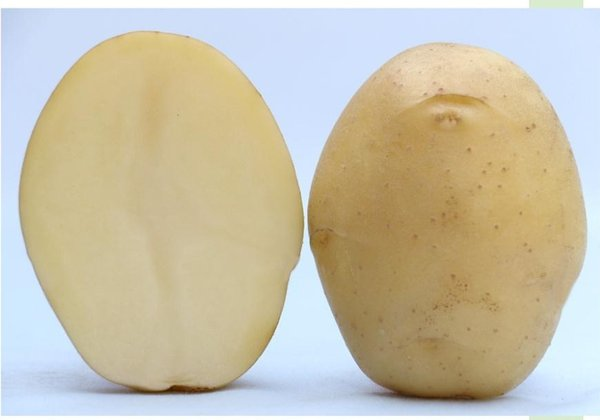

Kufri Jyoti
CPRI · 1968India's most-loved potato for over half a century.
Maturity90–110 days
Yield30 t/ha
Best forTable
The name buyers recognise before you finish speaking — consistent mandi demand and reliable pricing across all of India.